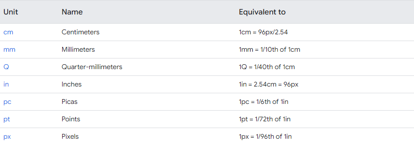
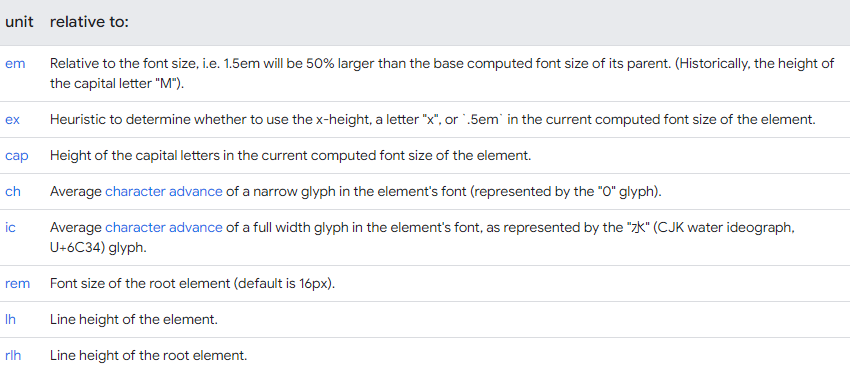
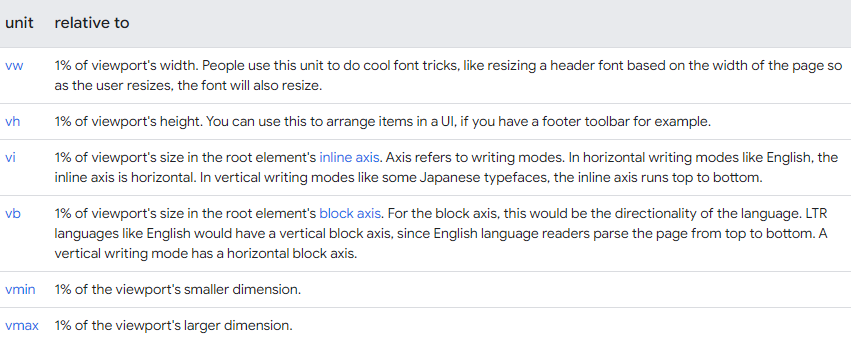

Categorias de comprimento
Há cinco categorias de unidades de comprimento: números, porcentagens, dimensões absolutas, dimensões relativas e ângulos.
Comprimentos numéricos
Números são usados para definir opacity, line-height e, até, os valores dos canais de cores para rgb. Eles podem ser inteiros (1, 2, 3, 100) ou decimais (.1, .2, .3), e não apresentam uma unidade.
O significado dos números depende de seu contexto. Por exemplo, ao definir line-height, um número representa uma fração se não tiver unidade:
p {
font-size: 24px;
line-height: 1.5;
}
O código acima define a altura da linha com base em um fonte com tamanho de 24px, então 1.5 calcula um valor de 36px (24 * 1,5 = 36).
Observação: recomenda-se usar um valor sem unidade para line-height. Como o tamanho da fonte pode ser herdado, definir a altura da linha sem a unidade faz com que ela seja relativa ao tamanho da fonte, o que proporciona uma experiência melhor do que defini-la explicitamente e pode fazer com que tenha uma aparência desagradável com certos tamanhos de fonte.
Você também pode usar números nos seguintes:
- Ao definir valores para filtros:
filter: sepia(0.5)aplica um filtro de sépia a 50% ao elemento. - Ao definir a opacidade:
opacity: 0.5aplica uma transparência de 50%. - Em canais de cores: em
rgb(50, 50, 50)aceita-se valores de 0 a 255 sem unidades para definir a cor. - Para transformar um elemento:
transform: scale(1.2)escalona o elemento em 120% de seu tamanho inicial.
Comprimentos percentuais
Ao usar porcentagens no CSS, é preciso saber como calculá-la. Por exemplo, width é calculada como uma porcentagem da largura disponível no elemento pai.
Dimensões absolutas
Ao usar uma unidade com o valor, esse conjunto é chamado de "dimensão". Há dois tipos de dimensão: absoluta e relativa.
As unidades de comprimento absolutas são fixas e o comprimento aparece exatamente como o tamanho definido por elas, o que as torna bem previsíveis. Não se recomenda usar unidades de comprimento absolutas em telas, porque os tamanhos de telas podem variar. Entretanto, recomenda-se seu uso quando se sabe qual é o meio de saída, como um layout de impressão.

* Pixels (px) são relativos ao dispositivo de exibição. Para dispositivos com baixo DPI, 1px é UM pixel do dispositivo (dot) da tela. Para impressoras e telas de alta resolução, 1px implica em vários pixels do dispositivo.
Também é possível usar a unidade dpi (dots per inch) para definir, por exemplo, uma media query para telas com altíssima resolução, que oferece uma imagem com resolução mais alta para telas como Retina displays.
Dimensões relativas
Unidades de comprimento relativas definem um comprimento relativo a outra propriedade de comprimento, de forma muito similar às porcentagens. As unidades relativas se adaptam melhor aos diferentes meios de processamento.

Observação: as unidades em e rem são extremamente úteis para criar um layout escalonável!

* Viewport = o tamanho da janela do navegador. Se o viewport tem 50 cm de largura, 1 vw = 0,5 cm.
Ângulos
No módulo sobre cores, vimos algumas unidades com ângulos, que são úteis para definir valores em graus, como o tom (H) do hsl. Elas também são úteis para girar elementos com a função transform.
As unidades de ângulo são rad (radians), grad (gradians) e turn, que representa parte de um ângulo, em que 1turn = 360deg e 0.5turn = 180deg.
Calcula-se dimensões absolutas com base em um único valor base compartilhado, mas calcula-se dimensões relativas com base em um valor variável.